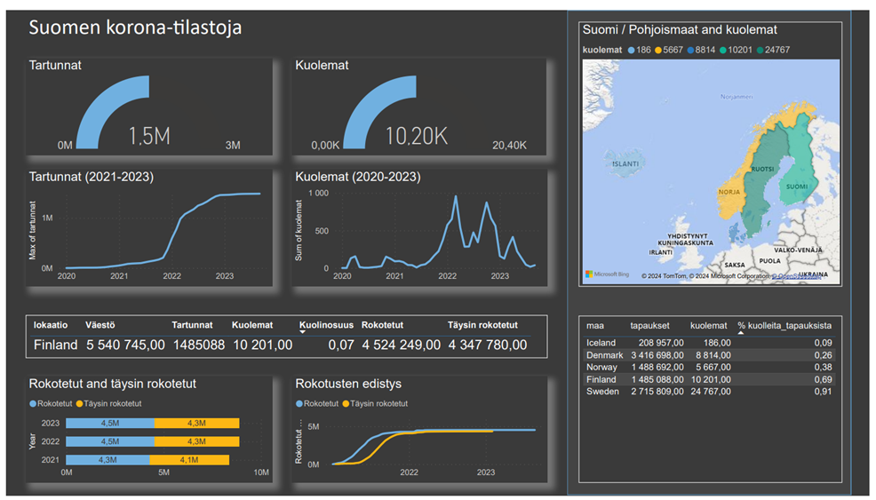
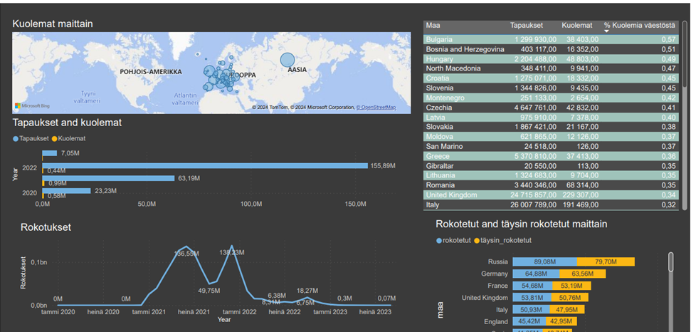
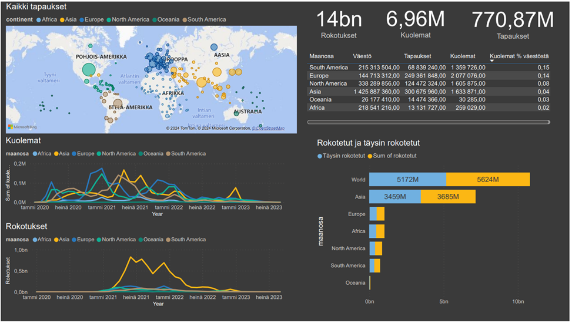

Tällä sivulla esittelen muutamia SQL-projektejani.
Kaikista tällä sivulla esitellyistä projekteista löytyy alkuperäiset kooditiedostot TÄSTÄ (Github)
Tämän hetken projektit ovat:Koronatilastot. Tässä projektissa käyn läpi Suomen, Euroopan ja maailman korotilastoja. Taitoja, joita tässä projektissa opin olivat keskeisesti
- tarkasteleva analyysi
- Excel (datan siivoaminen)
- SQL (CTE, Join, ikkuna-ja aggregaatti-funktiot)
- MySQL
- Power Bi (datan visualisointi)
- Python (Pandas)
- Visual Studio Code
Koronatilastot
Projekti koostuu kolmesta eri alaprojektista:
- Suomen koronatilastot
- Euroopan koronatilastot
- Maailman koronatilastot
Projektin toteutuksessa käytetyt SQL-haut löytyvät Github-sivultani.
Projektin lähtökohtana oli tutkia SQL:n avulla Our World In Data -sivuston (Coronavirus Pandemic (COVID-19) - Our World in Data) tarjoamaa dataa (csv-tiedosto) koronasta vuosien 2020 (tammikuu) - 2023 (syyskuu) ajalta. Sivustolla on mahdollista tarkastella dataa maailmanlaajuisesti, tai rajata sitä maanosien tai halutun kohdemaan mukaan, joista voi myös ladata itselleen tiedoston. Kaikki sivuston tarjoama data käsittää sivuston mukaan muun muassa
1) tapaukset: Kuinka monta uutta tapausta vahvistetaan päivittäin? Kuinka monta tapausta on vahvistettu pandemian alusta lähtien? Miten tapausten määrä muuttuu?
2) Kuolemat: Kuinka monta COVID-19:ään liittyvää kuolemaa on raportoitu? Onko kuolemien määrä nouseva vai laskeva? Miten kuolleisuus vertautuu muihin maihin?
3) Rokotukset: Kuinka monta rokoteannosta annetaan päivittäin? Kuinka monta annosta on annettu yhteensä? Mikä osuus väestöstä on rokotettu?
4) Testaus: Kuinka paljon maat tekevät koronavirustestejä? Kuinka monta testiä maa tekee löytääkseen yhden COVID-19-tapauksen?
Projektin lähtökohtana oli tarkastella ensin maailmanlaajuisia tilastoja, joka kuitenkin laajeni kolmeksi eri alaprojektiksi. Maailman korona-datan lisäksi, käsittelen myös Suomen ja Euroopan korona-tilastoja. Tiedoston suuruuden takia (noin 344000 riviä) päätin tapauskohtaisesti lähtökohtaisesti rajata tiettyjä osa-alueita pois tarkastelusta ja keskittää analyysi kohtien 1-3 tarkasteluun.
Datan alustava muokkaaminen analyysia varten
Poistin ensin Excelissä lähdetiedostosta ylimääräisiä, analyysin kannalta tarpeettomia sarakkeita. Suodatin lisäksi Suomen ja Euroopan korona-analyysiä varten tiedostosta myös tarpeettomia rivejä (maita ja niihin liittyviä tietoja) pois. Lopuksi muokkasin tietosarakkeita oikeaan numeeriseen muotoon, kuten päivämääriä, tai tekstimuotoisia numeerista dataa sisältäviä sarakkeita. Koska kyseessä on SQL-projekti, jätin osan datan muokkauksesta sql-hakujen yhteyteen (null-arvojen huomiointi). Käytin analyysissa MySQL:ää, johon latasin muokatun CSV-tiedoston Pythonia käyttäen Visual Studio Codea.
Alaprojekti 1: Suomen koronatilastoja
Suomen tilastoissa tuon esiin tapaukset, kuolemat, rokotukset, rokotetut ja miten niiden trendit kehittyivät 2020-2023 välisenä ajanjaksona. Lisäksi lisäsin analyysiin ja raporttiin mukaan vertailun vuoksi myös dataa pohjoismaiden tapauksista ja kuolemista ja niiden suhteellisista osuuksista. (SQL-haut Githubissa)
Tulokset:
1. Suomessa on 2020-2023 (syyskuu) välisenä aikana virallisia tartuntoja noin 1,5 miljoonaa. Huippu tartunnoissa havaitaan vuoden 2022 aikana ja siirtyen edelleen 2023 puolelle. Luultavammin tämä johtuu höllentyneistä korona-rajoituksista.
2. Tartunnoista kuolemaan johti 10201 tapausta, jotka vastaavat 0,69% osuuttaa tapauksista ja 0,07% osuutta väestöstä. Kuolemien trendi seuraa tartuntahuippuja vuoden 2022-2023 aikana jakautuen alkuvuoden ja loppuvuoden 2022 huippuihin ja vuoden 2023 jo alhaisempiin kuolemiin.
3. Rokotettuja tilastojen mukaan olisi ollut 4,5 miljoonaa, joista täysin rokotettuja hivenen vähemmän, noin 4,3 miljoonaa. Suurin huippu rokotuksille on vuoden 2021 aikana jolloin rokotukset käynnistyivät.
4. Pohjoismaiden välisessä vertailussa Suomi sijoittuu kuolemien suhteellisen osuuden mukaan katsoen sijalle 2 Ruotsin jälkeen. Vaikka varsinaisia syitä tähän ei pysty varmaksi sanomaa tässä kohtaa, niin spekuloiden voi todeta ainakin maiden väkiluvun olevan yksi havaittavissa oleva tekijä.
Alaprojekti 2: Euroopan koronatilastot
Euroopan tilastoissa nostan esiin tapaukset, kuolemat, rokotukset, rokotetut ja miten niiden trendit kehittyivät 2020-2023 välisenä ajanjaksona.
Tulokset Euroopan korona-analyysista:
1. Tapauksia esiintyi vuoden 2020-2023 aikavälillä noin 250 miljoonaa. Suurin huippu todetuissa tapauksissa sijoittuu vuoden 2022 ajalle, 156 miljoonaa.
2. Kuolemia Euroopassa on analyysin mukaan tilastoitu reilu 2 miljoonaa. Suurin osa näistä sijoittuu analyysin mukaan 2020-2021 ajalle. Suurimmat lukemat löytyvät Englannista (230 tuhatta), Ranskasta (168 tuhatta), Ukrainasta (109 tuhatta), Italiasta (191 tuhatta), Puolasta (119 tuhatta) ja Venäjältä (400 tuhatta). Vastaavasti esimerkiksi Suomessa kuolemat jäävät 10 200 kpl:ään. Kuolemien suhteellinen osuus väestöstä on analyysin mukaan Bulgariassa (0,57%, Bosnia-Herzegovinassa (0,51%) ja Unkarissa (0,47%).
3. Rokotuksia Euroopassa on annettu tilastojen mukaan 1,27 miljardia, mikä on paljon, mutta jos määrä suhteutetaan rokotettuihin, 577 miljoonaa, on luku jo lähellä uskottavaa. Tähän sisältyy myös oletus kahdesta buustista.
4. Rokotettujen ja täysin rokotettujen välinen ero vaikuttaisi pysyvän maittain, joskin tässä kohden eroa ei suhteellisesti tarkennetakaan.
Alaprojekti 3: Maailman koronatilastot
Maailman koronatilastoissa nostan esiin tapaukset, kuolemat, rokotukset, rokotetut ja miten niiden trendit kehittyivät 2020-2023 välisenä ajanjaksona.
Tuloksia maailman korona-analyysista:
1. Tapauksia maailmanlaajuisesti olisi syyskuuhun 2023 mennessä kerääntynyt 770 miljoonaa. Määrällisesti eniten tapaksia on Aasiassa, mikä johtuu selkeästi suuremmasta väestön määrästä. Toiseksi eniten Pohjois-Amerikassa ja edelleen Euroopassa.
2. Kaikkiaan koronakuolemia tilastoitiin maailmanlaajuisesti 6,96 miljoonaa. Kuolemien suhteelliset osuudet suhteessa väestöön ovat suurimmat Etelä-Amerikassa (1,36m / 0,15%), sen jälkeen Euroopassa(reilu 2m / 0,14%) ja Pohjois-Amerikassa(1,6m / 0,08%). Kuolemien huiput vaikuttaisivat ajoittuvan Euroopassa ja Pohjois-Amerikassa vuoden 2020 kevään puolelle ja etenkin vuoden 2021 alkuun. Vastaavasti Aasiassa ja Etelä-Amerikassa huippu kuolemissa saavutetaan vasta kevään ja kesän 2021 aikana.
3. Maailmanlaajuiset rokotusmäärät kipuavat 14 miljardiin. Rokotettujen määrä yltää 5,6 miljardiin, joista 5,1 miljardia on täysin rokotettuja. Rokotettujen määrä on korkein luonnollisesti Asiassa, jonka kohdalla nähdään myös huipukkuutta heinäkuun 2021 ja tammikuun 2022 aikana. Muiden maan osien määrät jäävät selvästi pienimmäksi absoluuttisia määriä katsoessa.